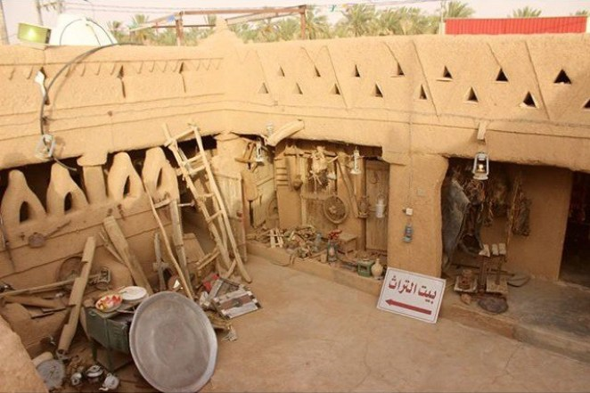
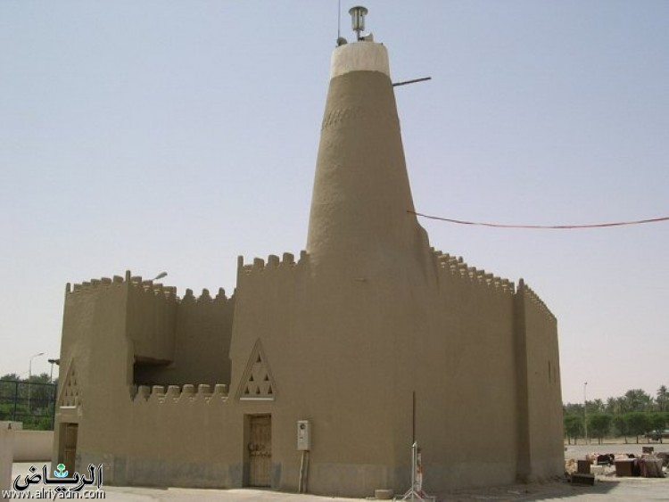

المعالم الأثرية في مدينة عنيزة
|  |  | |
قصر عنيزة التراثيبالقرب من أحد المداخل الرئيسيّة للمدينة، وتم بناؤه في عام 1374هــ، تمت فترة البناء على أكثر من مرحلة، ابتداءً بالجهة الشمالية، وتم الانتهاء منه عام 1377هـ. |
منزل الحمدان التراثيمنزل الحمدان التراثي هو منزل شعبي عريق، تم بناؤه من الطين، على طراز العمارة القديمة، قام مالكه بتحويله إلى موقع أثري وسياحي، لجذب الزوّار. |
مسجد الخريزة بعنيزةمسجد الخريزة هو من أقدم المساجد في المحافظة، تم بناؤه قبل مئتي عام، ورُمّم في عام 1337هـ، وهو لا يزال قائماً ويصلون الناس فيه |